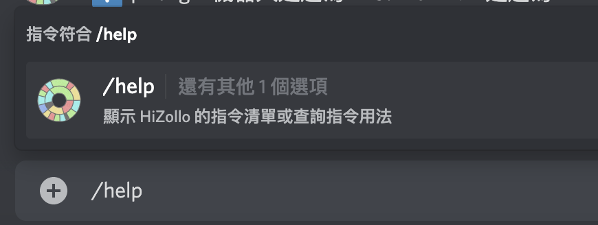

z!）是完全不同的東西。在訊息指令的介紹中，我們直接推薦你使用 z!help 指令查詢，因為訊息指令十分難一次猜中他的使用方式。z!help 的斜線版指令：/help
/help 的用法就跟訊息版幾乎是一模一樣，他帶有一個選填的選項：

這個選項正是要填入指令名稱，只要將想要查詢的指令名稱傳進去就好了。注意：指令名稱是指 / 後面的那個，不包含 / 本身。
讓我們填入一個指令的名稱並送出看看：
可以看到，他跟訊息指令版長得有點像，但又不完全一樣。相同的地方有
[]）表示必填，角括號（<>）表示非必填。而下面會詳細的講解這個選項的規範內容以及對選項的簡短說明。規範內容是指，這個選項只能填入的類別，例如字串就是所有東西都能填，但如果是數字的話就代表你只能填入數字，任何其他的都會被拒絕。而簡短說明則是你可以在填選項時看到的說明，幫助你更加了解這些選項的作用。| 分類 | 內容 |
|---|---|
| 基本 | 邀請 HiZollo ・ 指令清單及一般指令・ 指令用法的查詢 |
| 進階 | 指令群・ 指令別名・ 群組指令捷徑 |
| 特殊 |
隱藏指令・
z!calc 的進階用法・
支援伺服器
|
| 斜線指令 | 開始使用・ 指令用法的查詢・ 斜線Ｚ指令 |
| HiZollo 聯絡網 | HiZollo Guild Drop |